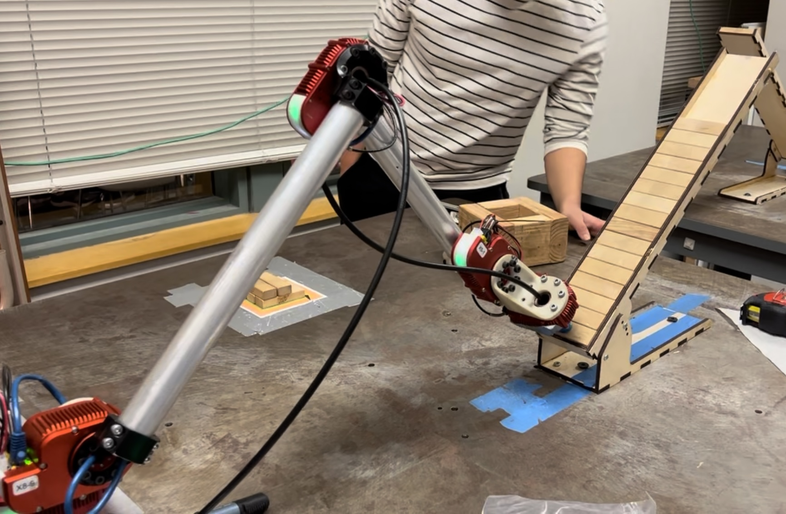
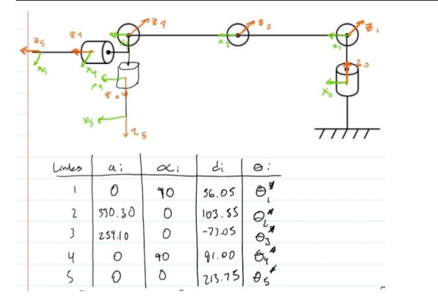

Jenga-Stacking Robot Arm
Programming a robot arm to stack Jenga blocks
Robot Kinematics and Dynamics Capstone, September - December 2023
About the Project:
This project was coded for a class called Robot Kinematics and Dynamics, where the aim of the project was to stack a
certain amount of Jenga block layers within a time frame and the physical bounds of a tight box. Using inverse kinematics,
we calculated the joint positions based on the desired end effector pose and commanded the robot to move to this position.
Additionally, with inverse kinematic trajectory planning, we were able tos make straight-line movements in the world
coordinate space with intermediate waypoints to achieve the final movement pattern. Below is a full demonstration of the
final state of the project.

The Project Theory
Below are some pictures of the subsystems of the boat. On the top right are the two motors which
operated the boat as a skid steer. These were controlled by ESCs, operated by an Arduino with
an IMU and a magnetometer to detect pose. On the bottom right was our sensor package, which
included an Arduino wired to various water data sensors like salinity, turbidity, temperature,
and pH. Lastly, on the bottom left, you can see the reel and chute system for deploying the
sensor package and some of the internal electronics, like the batteries for powering all subsystems.